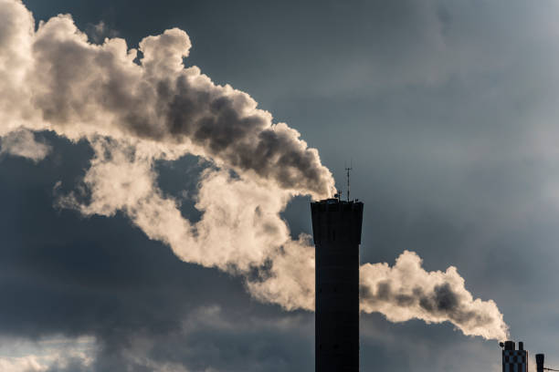

O efeito estufa é um fenômeno natural e possibilita a vida humana na Terra.
Parte da energia solar que chega ao planeta é refletida diretamente de volta ao espaço, ao atingir o topo da atmosfera terrestre - e parte é absorvida pelos oceanos e pela superfície da Terra, promovendo o seu aquecimento. Uma parcela desse calor é irradiada de volta ao espaço, mas é bloqueada pela presença de gases de efeito estufa que, apesar de deixarem passar a energia vinda do Sol (emitida em comprimentos de onda menores), são opacos à radiação terrestre, emitida em maiores comprimentos de onda. Essa diferença nos comprimentos de onda se deve às diferenças nas temperaturas do Sol e da superfície terrestre.
De fato, é a presença desses gases na atmosfera o que torna a Terra habitável, pois, caso não existissem naturalmente, a temperatura média do planeta seria muito baixa, da ordem de 18ºC negativos. A troca de energia entre a superfície e a atmosfera mantém as atuais condições, que proporcionam uma temperatura média global, próxima à superfície, de 14ºC.
Quando existe um balanço entre a energia solar incidente e a energia refletida na forma de calor pela superfície terrestre, o clima se mantém praticamente inalterado. Entretanto, o balanço de energia pode ser alterado de várias formas: (1) pela mudança na quantidade de energia que chega à superfície terrestre; (2) pela mudança na órbita da Terra ou do próprio Sol; (3) pela mudança na quantidade de energia que chega à superfície terrestre e é refletida de volta ao espaço, devido à presença de nuvens ou de partículas na atmosfera (também chamadas de aerossóis, que resultam de queimadas, por exemplo); e, finalmente, (4) graças à alteração na quantidade de energia de maiores comprimentos de onda refletida de volta ao espaço, devido a mudanças na concentração de gases de efeito estufa na atmosfera.
Essas mudanças na concentração de gases de efeito estufa na atmosfera estão ocorrendo em função do aumento insustentável das emissões antrópicas desses gases.
As emissões de gases de efeito estufa ocorrem praticamente em todas as atividades humanas e setores da economia: na agricultura, por meio da preparação da terra para plantio e aplicação de fertilizantes; na pecuária, por meio do tratamento de dejetos animais e pela fermentação entérica do gado; no transporte, pelo uso de combustíveis fósseis, como gasolina e gás natural; no tratamento dos resíduos sólidos, pela forma como o lixo é tratado e disposto; nas florestas, pelo desmatamento e degradação de florestas; e nas indústrias, pelos processos de produção, como cimento, alumínio, ferro e aço, por exemplo.
Gases de efeito estufa
Há quatro principais gases de efeito estufa (GEE), além de duas famílias de gases, regulados pelo Protocolo de Quioto:
- O dióxido de carbono (CO2) é o mais abundante dos GEE, sendo emitido como resultado de inúmeras atividades humanas como, por exemplo, por meio do uso de combustíveis fósseis (petróleo, carvão e gás natural) e também com a mudança no uso da terra. A quantidade de dióxido de carbono na atmosfera aumentou 35% desde a era industrial, e este aumento deve-se a atividades humanas, principalmente pela queima de combustíveis fósseis e remoção de florestas. O CO2 é utilizado como referência para classificar o poder de aquecimento global dos demais gases de efeito estufa;
- O gás metano (CH4) é produzido pela decomposição da matéria orgânica, sendo encontrado geralmente em aterros sanitários, lixões e reservatórios de hidrelétricas (em maior ou menor grau, dependendo do uso da terra anterior à construção do reservatório) e também pela criação de gado e cultivo de arroz. Com poder de aquecimento global 21 vezes maior que o dióxido de carbono;
- O óxido nitroso (N2O) cujas emissões resultam, entre outros, do tratamento de dejetos animais, do uso de fertilizantes, da queima de combustíveis fósseis e de alguns processos industriais, possui um poder de aquecimento global 310 vezes maior que o CO2;
- O hexafluoreto de enxofre (SF6) é utilizado principalmente como isolante térmico e condutor de calor; gás com o maior poder de aquecimento, é 23.900 vezes mais ativo no efeito estufa do que o CO2;
- O hidrofluorcarbonos (HFCs), utilizados como substitutos dos clorofluorcarbonos (CFCs) em aerossóis e refrigeradores; não agridem a camada de ozônio, mas têm, em geral, alto potencial de aquecimento global (variando entre 140 e 11.700);
- Os perfluorcarbonos (PFCs) são utilizados como gases refrigerantes, solventes, propulsores, espuma e aerossóis e têm potencial de aquecimento global variando de 6.500 a 9.200.
Os hidrofluorcarbonos e os perfluorcarbonos pertencem à família dos halocarbonos, todos eles produzidos, principalmente, por atividades antrópicas.

aquecimento global emerge como um dos maiores desafios que a humanidade enfrenta no século XXI, exigindo uma resposta coletiva e abrangente. Este fenômeno, impulsionado principalmente pela liberação descontrolada de gases de efeito estufa, tem transformado o panorama climático do nosso planeta, gerando impactos significativos e irreversíveis.
As mudanças observadas, como o aumento das temperaturas médias, o derretimento de geleiras e eventos climáticos extremos, são indicadores alarmantes do desequilíbrio ambiental. A responsabilidade humana nesse processo é inegável, resultante de práticas insustentáveis, consumo desenfreado de recursos e dependência excessiva de fontes de energia não renováveis.
A busca por soluções demanda uma abordagem multifacetada. A transição para fontes de energia limpa e renovável é imperativa, exigindo investimentos significativos em tecnologias sustentáveis e políticas que incentivem a descarbonização da economia. Além disso, práticas de conservação ambiental, reflorestamento e adoção de estratégias agrícolas sustentáveis desempenham papéis cruciais na mitigação do impacto ambiental.